2015-07-14 - Nº 11
Editorial
Aqui está a Newsletter Nº 11 no seu formato habitual.
Esta Newsletter encontra-se mais uma vez disponível no sistema documenta do altLab. Todas as Newsletters encontram-se indexadas no link.
Esta Newsletter tem os seguintes tópicos:
- Novidades da Semana
- Ciência e Tecnologia
- Cursos MOOC
- Modelos 3D
- Open Source
- Circuitos
- Artigo do Maker
- Compras
E chegou hoje a Plutão a sonda New Horizon (Mission Timeline). Lançada em Janeiro de 2006 fez uma viagem de mais de 3 mil milhões de milhas (4,8 biliões de quilómetros). Irá agora recolher informação para posterior envio para a Terra, esta irá demorar cerca de 4 horas e meia a chegar!
Nesta edição da Newsletter iremos montar um circuito que tem o nome de "Atari Punk Console". Iremos igualmente falar do Audacity - software open-source para edição de ficheiros de áudio. O projeto de maker da semana é um mural interactivo com luz e som.
 João Alves ([email protected])
João Alves ([email protected])
O conteúdo da Newsletter encontra-se sob a licença  Creative Commons Attribution-NonCommercial-ShareAlike 4.0 International License.
Creative Commons Attribution-NonCommercial-ShareAlike 4.0 International License.
Novidades da Semana ^
Samsung Researchers Nearly Double Lithium-ion Battery Capacity
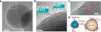
"Silicon is receiving considerable attention as an active material for next- generation lithium-ion battery anodes because of its gravimetric capacity--a measure in mAh/g of the total charge capacity stored by the cell or battery, per gram of the battery's weight. Unfortunately, the large volume change of silicon during charge–discharge cycles has in the past weakened its competitiveness. Recently, however, a research group from Samsung reported in the publication Nature Communications that using direct graphene growth over silicon nanoparticles without silicon carbide formation resulted in a near doubling of run-time by expanding energy density-- the amount of stored power in a given area -- to 1.8 times that of current batteries."
IBM announces 7nm chips breakthrough to keep Moore’s Law alive
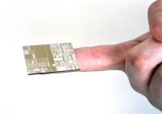
"IBM said on Thursday that it had made working versions of ultradense computer chips, with roughly four times the capacity of today’s most powerful chips. The announcement, made on behalf of an international consortium led by IBM, the giant computer company, is part of an effort to manufacture the most advanced computer chips in New York’s Hudson Valley, where IBM is investing $3 billion in a private-public partnership with New York State, GlobalFoundries, Samsung and equipment vendors."
Scientists Have Created Greenhouses That Grow Gardens Underwater
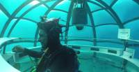
"For the past 4 years a team of scientists off the coast of Italy have been working on a project called Nemo’s Garden. They're using special greenhouses underwater that allow them to grow fruits and vegetables 20 feet below the surface. The project still has a long way to go but it could be a giant leap forward when it comes to creating more food for the people of planet Earth."
Ciência e Tecnologia ^
-
"A pioneering new technique to produce high-quality, low cost graphene could pave the way for the development of the first truly flexible 'electronic skin', that could be used in robots. Researchers from the University of Exeter have discovered an innovative new method to produce the wonder material Graphene significantly cheaper, and easier, than previously possible."
Electrical Engineers Break Power and Distance Barriers for Fiber Optic Communication
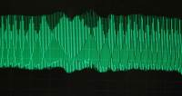
"Electrical engineers have broken key barriers that limit the distance information can travel in fiber optic cables and still be accurately deciphered by a receiver. Photonics researchers at the University of California, San Diego have increased the maximum power — and therefore distance — at which optical signals can be sent through optical fibers. This advance has the potential to increase the data transmission rates for the fiber optic cables that serve as the backbone of the internet, cable, wireless and landline networks."
With 300 Kilometers per Second to New Electronics
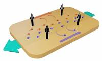
"A material with superfast electrons that exhibits extremely large magnetoresistance may be suitable for use in electronic components. It may be significantly easier to design electronic components in future. Scientists at the Max Planck Institute for Chemical Physics of Solids have discovered that the electrical resistance of a compound of niobium and phosphorus increases enormously when the material is exposed to a magnetic field. This giant magnetoresistance, which is responsible for the large storage capacity of modern hard discs, was previously known to occur in some complexly structured materials."
Cursos MOOC ^
- Signals and Systems, Part 2 - Começa a 23 Julho.
- Creative Coding - Começa a 3 de Agosto.
- Introduction to Robotics - Começa a 10 de Agosto.
- Technology Entrepreneurship - Começa a 16 de Setembro.
Modelos 3D ^
Com a disponibilidade de ferramentas que permitem dar azo a nossa imaginação na criação de peças 3D e espaços como o thingiverse para as publicar, esta rubrica apresenta alguns modelos selecionados que poderão ser úteis.
Customizable Windmill (http://www.thingiverse.com/thing:924438)
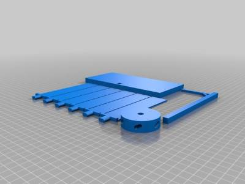
I designed this project with ease of printing in mind. Everything lays flat, and there shouldn't be many shallow angled overhangs. I don't have access to a 3d printer right now, so the dimensions might be a bit strange, but that's why I made it customizable.
Pythagoras Cup (The Greedy Cup) (http://www.thingiverse.com/thing:924398)
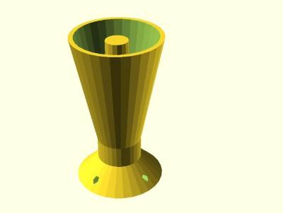
This is a very neat design that punishes the greedy! If the cup gets too full, the entire thing drains. Mechanically, it is a very simple siphon. A more complete (and cool) explanation on how this works can be found here: https://www.youtube.com/watch?v=ISfIT3B4y6E.
Customizable Knob! (http://www.thingiverse.com/thing:54024)
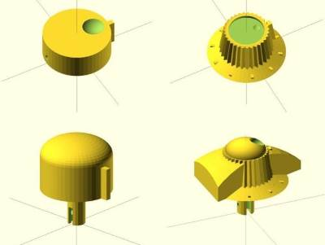
Design your own custom knobs!
Many different kinds are possible.
Customizer Potentiometer Knobs (http://www.thingiverse.com/thing:41274)
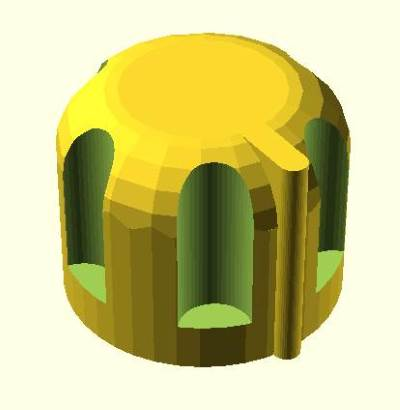
Here's the customizer version of the OpenSCAD parametric potentiometer knob generator. Enjoy!
Open Source ^
Audacity
O software Open source da semana é o Audacity. Trata-se de um software que permite editar pistas de áudio em ambientes Windows, GNU/Linux e MAC OS X. Encontra-se atualmente na versão 2.1.0 e pode ser descarrega da sua página oficial neste link.
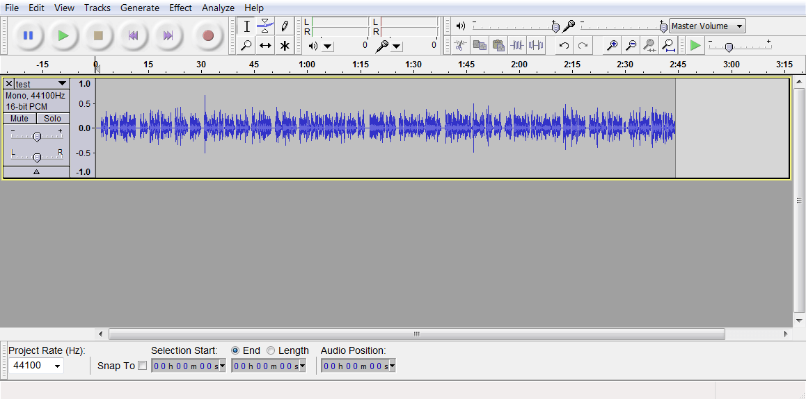
As principais funcionalidades deste software são:
- Gravação
- Gravar áudio ao vivo a partir de microfones, Linha de entrada, dispositivos USB/Firewire e outros
- Gravar áudio reproduzido pelo computador em qualquer máquina Windows
- Gravação temporizada e ativada por som
- Dobragem por cima de pistas para criar gravações multi-pista
- Gravar com muito baixa latência em dispositivos suportados em Linux pelo JACK
- Gravar com amostragens até 192Khz. Em dispositivos de alta resolução suporte até 384 Khz.
- Suporte de 24 bits em Windows
- Gravação múltiplos canais em simultâneo
- Apresentação de níveis de volume antes, durante e depois da gravação.
- Importação e Exportação
- Converter cassetes e gravações em som digital ou CDs
- Importa e exporta para ficheiro do formatos WAV, AIFF, FLAC e Ogg Vorbis
- Importação "on-demand" de ficheiros WAV ou AIFF
- Importa e exporta par a todos os formatos suportados pela bibilioteca libsndfile (GSM 6.10, 32-bit e 64-bit float WAV, RF64, e U/A-Law).
- Suporte de formatos adicionais como AC3, M4A/M4R (AAC), WMA com biblioteca FFmpeg
- Importação de MPEG áudio (MP2 e MP3) através da biblioteca libmad.
- Exportar para MP3 com a biblioteca LAME encoder.
- Criação de ficheiros WAV e AIFF preparados para serem gravados em CD de áudio.
- Qualidade Sonora
- Suporta Samples de 16-bit, 24-bit e 32-bit
- Rácios de amostragem e formatos são convertidos usando reamostragem de alta qualidade.
- Pistas com diferentes rácios de amostragem são convertidas automaticamente em tempo real.
- Edição
- Edição simples com funcionalidades de Corte, Copia, Colagem e Remoção
- Undo sequencial ilimitado (com Redo) para andar para trás/frente qualquer numero de passos.
- Edição e mistura de um grande numero de pistas.
- As pistas podem ter etiquetas com a funcionalidade de Pistas Sync-Lock
- Ferramenta de desenho para alteração de pontos individuais de amostragem
- Ferramenta de envelope para desvanecer-se o volume para cima ou para baixo suavemente.
- Recuperação automática de Crashs no caso do programa terminar anormalmente
- Acessibilidade
- Pistas e seleções podem ser feitas com o teclado
- Grande numero de atalhos de teclado
- Suporte para o JAWS, NVDA e outros leitores de écran
- Efeitos
- Pré-visualização em tempo real de efeitos LADSPA, VST e Audio Unit (MAC OS X)
- Mudança do pitch sem alteração do tempo (ou vice-versa)
- Remoção da estática, zumbidos ou outros ruídos de fundo constantes
- alteração de frequências com equalização, Bass, Treble, Filtros passa baixo/alto efeitos de filtro Notch.
- Filtragem de seleção de frequências feito na vista do Espectrograma
- Ajuste de volume com Compressão, Amplificação, Normalização, Desvanecimento, e efeitos ajustáveis de desvanecimento.
- Remoção de Vocais de pistas estereo adequadas.
- Criar voice-overs usando o efeito Auto Duck para podcasts
- Outros efeitos incluídos:
- Eco
- Paulstretch
- Phaser
- Ressonância (Reverb)
- Reverso
- Cortar Silencio
- Wahwah
- Executar vários efeitos num projeto ou em múltiplos ficheiros em modo Batch Processing
- Plug-ins
- Suporte para efeitos LADSPA, LV2, Nyquist, VST e Audio Unit
- efeitos escritos na linguagem de programação Nyquist
- Analise
- Modos de vista em espectrograma para visualizar e selecionar frequências
- Janela "Plot Spectrum" para analise detalhada de frequências
- "Sample Data Export" para exportar para um ficheiro contendo valores de amplitude para cada samples na seleção
- Analise de contraste para analisar as medias das diferenças de volume RMS entre a voz e a música de fundo
- suporte para adicionar plug-ins de analise VAMP
Links úteis:
Circuitos ^
Aqui é apresentado um circuito simples que poderá ser construído com componentes.
Atari Punk Console
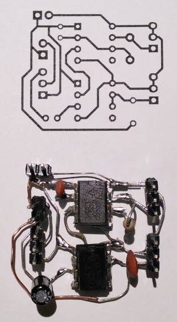 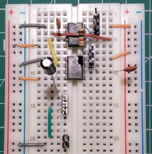
O circuito apresentado é um circuito muito popular baseado em dois IC 555. Produz um conjunto de sons audiveis que podem ser alterados usando os dois potenciómetros.
O circuito original foi publicado por Forrest Mims num livro da Radio Shack "Engineer's Mini-Notebook - 555 Circuits". Tinha o nome original de "Sound Synthesizer" que foi alterado posteriormente para o referido pela semelhança com o som produzido nos anos 80 pela consola Atari. O circuito é um oscilador a-estável de uma onda quadrada que conduz um oscilador monoestável que cria um pulso simples (quadrado). Existem dois controlos, um para a frequência do oscilador e outro para o comprimento do pulso.
Esquemático
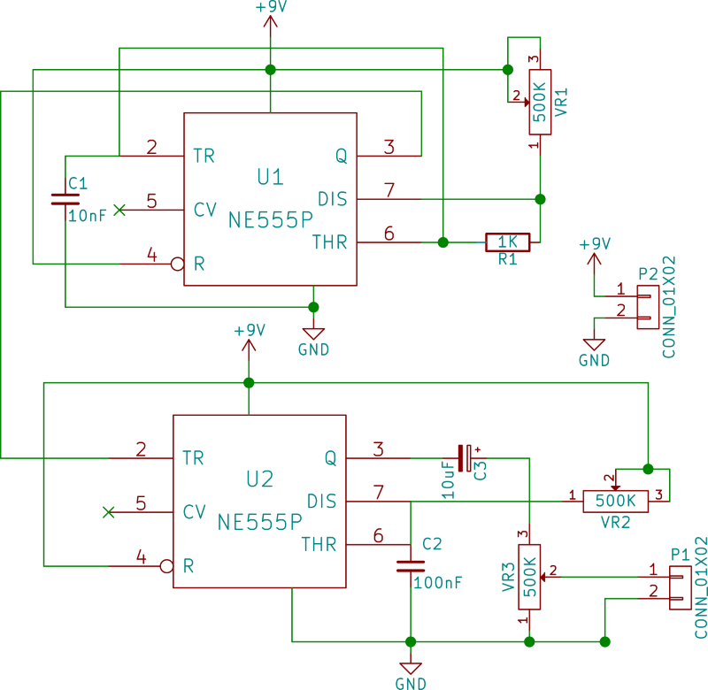
Componentes (BOM):
- 2x NE555P (U1, U2)
- 1x Resistência de 1K Ohms (R1)
- 1x Condensador Cerâmico de 10nF (C1)
- 1x Condensador Cerâmico de 100nF (C2)
- 1x Condensador Electrolítico de 10uF (C3)
- 3x Resistência Variável de 500K (VR1 a VR3)
- 1x Bateria de 9V
- 1x Cabo ligação Bateria
Pin-out dos IC
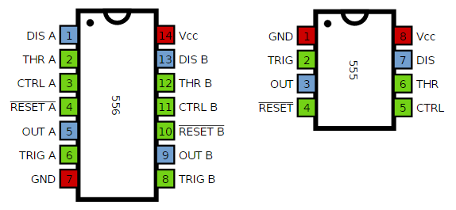
Links úteis:
- 555 timer IC
- Make something that blinks or makes sound.
- Forrest M. Mims III
- Atari Punk Console with two 555s
- Atari Punk Console Stripboard Veroboard Layout
{kind=link}
Artigo do Maker ^
Projeto interessante publicado por um maker.
Interactive Spacelady Mural
O projeto de maker da semana foi criado pela Jenna Debois Blanc e é um Mural Interactivo em formato de Mulher Espacial. Os detalhes do mesmo encontram-se publicados no intructables e no site da Jenna.
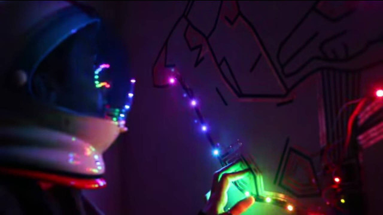
Este projeto desperta a atenção pela mistura de luz e som que provoca.
O Video publicado no youtube mostra o projeto a funcionar. O projeto encontra-se publicado no instructables neste link.
O projeto para ser executado precisa dos seguintes materiais:
- Arduino UNO + Cabo USB
- Sensor de toque capacitivo
- Neopixeis
- Fita de cobre
- Fita normal
- Mini Breadbaord
- Cabos de breadboard
- Solda e ferro de soldar
Relativamente aos Neopixeis é necessário algumas resistências entre o Arduino e o pino de dados. Ver o Adafruit’s Neopixels uberguide para mais detalhes.
Passo 1: Preparar o astronauta
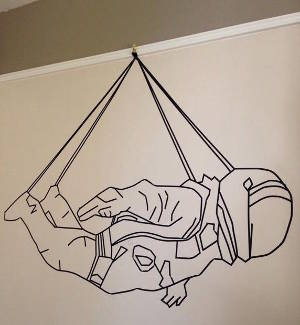 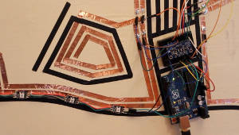
- Começar por fazer o mural com fita normal ( se tiver um projetor ajuda para se poder marcar os locais onde colocar a fita)
- Usar 2 pregos para fixar o Arduino UNO à parece
- Colocar a minibreadboard acima do Arduino com fita
- Usar cabos de breadboard para ligar o Arduino ao sensor Capacitivo
- 5V -> Vin
- GND -> GND
- SCL -> A5 (no arduino)
- SCA -> A4 (no arduino)
- Colocar 12 linhas de fita de cobre originarias de cada um dos 12 inputs do sensor capacitivo (0-11) que servirão como botões.
- Soldar os cabos de breadboard ao fim de cada uma das fitas
- Para fazer zonas de pressão facilmente premiveis, juntar a fita de cobre a volta de si para fazer uma forma
- Finalmente, colocar fita nas 2 strips de Neopixeis - 9 e 13 pixeis em comprimento ao fato do astronauta.
- Nota: O numero de LEDs é arbitrário, mas se for usado o código abaixo, faça os ajustes necessários.
- Os Neopixeis podem ser espaçados desde que sejam novamente unidos com fios de cobre.
- Os Neopixeis foram ligados de acordo com o tutorial da adafruit que se encontra neste link.
Passo 2: Código
Antes de instalar o código no Arduino é necessário instalar duas bibliotecas:
O código deste projeto encontra-se no github neste link.
/*********************************************************
SPACELADY
an interactive, Arduino-controlled Neopixel mural
June 2015
Jenna deBoisblanc
http://jdeboi.com
This code uses libraries and examples from Adafruit, specifically for
the MPR121 Breakout and Neopixels. Adafruit invests time and resources providing this open source code,
please support Adafruit and open-source hardware by purchasing
products from Adafruit! ----> https://www.adafruit.com/products/
**********************************************************/
#include <math.h>
///////////////////////////////
// CAPACITIVE
#include <Wire.h>
#include "Adafruit_MPR121.h"
Adafruit_MPR121 cap = Adafruit_MPR121();
uint16_t lasttouched = 0;
uint16_t currtouched = 0;
int currentPressed = 0;
#define BOUNCE 0
#define PULSING 1
#define SPARKLES 2
#define WIPE 3
#define FILLUP 4
#define UNFILL 5
// rainbowCycle
#define RANDBRIGHT 6
#define BLOCKS 7
// rainbowBounce
#define END 8
int currentMode = 1;
long soundT = 0;
boolean firstSound = true;
///////////////////////////////
// NEOPIXELS
#include <Adafruit_NeoPixel.h>
#include <avr/power.h>
#define NEOPIN 2
#define NEOPIN2 3
#define NUMNEO 13
#define NUMNEO2 9
Adafruit_NeoPixel strip = Adafruit_NeoPixel(NUMNEO, NEOPIN, NEO_GRB + NEO_KHZ800);
Adafruit_NeoPixel strip2 = Adafruit_NeoPixel(NUMNEO2, NEOPIN2, NEO_GRB + NEO_KHZ800);
uint8_t currentWheelPos = 0;
uint32_t noteColors[4];
uint8_t notePositions[4] = {5, 54, 150, 230};
uint8_t noteBright[22];
boolean darkOn = false;
boolean sparkleOn = false;
int previousStart;
//////////////////////////////////////////////////////////////////////
//////////////////////////////////////////////////////////////////////
void setup() {
initializeColors();
Serial.begin(9600);
cap.begin(0x5A);
strip.begin();
strip2.begin();
strip.show();
strip2.show();
}
void loop() {
updateKeys(); // update key positions
checkPresses(); // any keys pressed?
if(currentMode != WIPE && currentMode != FILLUP && currentMode != UNFILL && currentMode != BLOCKS && currentMode != END) {
if(allKeysOff()) setAllPixels(0); // reset Neopixels if no presses
}
}
//////////////////////////////////////////////////////////////////////
//////////////////////////////////////////////////////////////////////
///////////////////////////////
// PROGRAM LOGIC
void checkPresses() {
int pins[] = {10,7,6,9,8,5,1,0,3,2,4};
if(keyPressed(pins[4])) shiftMode(); // change mode button
else if(currentMode == END) {
for(int k=6; k<10; k++) {
if(keyPressed(pins[k])) {
if(k==9) {
pulseOut(noteColors[k-6],10);
return;
}
else {
fadeIn(noteColors[k-6], 10);
break;
}
}
else if(keyReleased(pins[k])) {
if(k != 9) fadeOut(noteColors[k-6],10);
break;
}
}
}
else if (currentMode == FILLUP || currentMode == UNFILL) {
for(int k=0; k<4; k++) {
if(keyPressed(pins[k])) {
if(currentMode == FILLUP) fillUpColorKey(k,50);
else unFillColorKey(k,50);
break;
}
}
for(int k=5; k<10; k++) {
if(keyPressed(pins[k])) {
if(currentMode == FILLUP) fillUpColorKey(k-1,50);
else unFillColorKey(k-1,50);
break;
}
}
}
else {
// "Space, space lady..."
if(keyPressed(pins[0])) playSound(0);
else if(keyPressed(pins[1])) playSound(1);
else if(keyPressed(pins[2])) playSound(2);
// control buttons
else if(keyPressed(pins[3])) {
while(1) rainbowCycleOrig(0);
}
// rainbow buttons
else if(keyPressed(pins[5])) rainbowBounce(30);
else if(keyPressed(pins[10])) rainbowCycle(5);
// color keys
for(int k=6; k < 10; k++) {
if(keyPressed(pins[k])) {
playColor(k-6);
break;
}
}
}
}
void shiftMode() {
currentMode++;
//Serial.print("mode: "); Serial.println(currentMode);
if(currentMode == 0) {
strip.setBrightness(150);
strip2.setBrightness(150);
}
else if(currentMode > 8) currentMode = 0;
}
void playColor(int key) {
switch(currentMode) {
case BOUNCE:
//Serial.println("bounce!");
bounce(noteColors[key],key, 25);
break;
case PULSING:
//Serial.println("pulse!");
pulse(noteColors[key],key, 5);
break;
case SPARKLES:
//Serial.println("sparkles!");
theaterChaseDouble(key, 50);
break;
case WIPE:
//Serial.println("wipe!");
colorWipe(noteColors[key],key,20);
break;
case RANDBRIGHT:
//Serial.println("random brightness!");
randomBrightRamp(key, 5);
break;
case BLOCKS:
//Serial.println("wipe!");
blocks(key);
break;
}
}
//////////////////////////////////////////////////////////////////////
//////////////////////////////////////////////////////////////////////
///////////////////////////////
// CAPACITIVE
boolean keyPressed(int num) {
if ((currtouched & _BV(num)) && !(lasttouched & _BV(num)) ) {
//Serial.println(num);
return true;
}
return false;
}
boolean keyReleased(int num) {
if (!(currtouched & _BV(num)) && (lasttouched & _BV(num)) ) {
// Serial.print("released: "); Serial.println(num);
return true;
}
return false;
}
boolean allKeysOff() {
for(int i = 0; i < 11; i++) {
if (currtouched & (1 << i)) return false;
}
return true;
}
void updateKeys() {
lasttouched = currtouched;
currtouched = cap.touched();
}
boolean colorKeyUp(uint8_t k) {
// 0,1,2,3,4,5,6,7,8,9,10
//10,7,6,9,8,5,1,0,3,2,4
int pins[] = {1,0,3,2,5,4};
if (!(cap.touched() & (1 << pins[k]))) return true;
return false;
}
void checkSound() {
int pins[] = {10, 7, 6};
uint16_t temp = cap.touched();
for(int i = 0; i < 3; i++) {
if ((temp & _BV(pins[i])) && !(lasttouched & _BV(pins[i])) ) {
//Serial.print("Playing sound "); Serial.println(i);
playSound(i);
return;
}
}
}
void soundDelay(uint16_t timeDelay) {
long t = millis();
while(millis() - t < timeDelay) checkSound();
}
//////////////////////////////////////////////////////////////////////
//////////////////////////////////////////////////////////////////////
///////////////////////////////
// NEOPIXELS
void setNeopixel(int index, uint32_t col) {
if(index < strip2.numPixels() && index >= 0) {
strip2.setPixelColor(strip2.numPixels()-1-index, col);
}
else if(index > strip2.numPixels()-1 && index < strip2.numPixels()+strip.numPixels()) {
strip.setPixelColor(index - strip2.numPixels(), col);
}
}
uint32_t getNeopixelColor(int index) {
if(index < strip2.numPixels() && index >= 0) {
return strip2.getPixelColor(strip2.numPixels()-1-index);
}
else if(index > strip2.numPixels()-1 && index < strip2.numPixels()+strip.numPixels()) {
return strip.getPixelColor(index - strip2.numPixels());
}
}
void setAllPixels(uint32_t col) {
for(uint16_t i=0; i<strip.numPixels(); i++) {
strip.setPixelColor(i, col);
}
for(uint16_t i=0; i<strip2.numPixels(); i++) {
strip2.setPixelColor(i, col);
}
strip.show();
strip2.show();
}
void setPixelBrightness(uint8_t index, uint8_t r, uint8_t g, uint8_t b, uint8_t bright) {
double hslArray[3];
int rgbArray[3];
rgb2HSL(r,g,b, hslArray);
double lum = bright/256.0;
hslArray[2]= lum;
Serial.print("lum: " ); Serial.println(hslArray[2]);
hsl2RGB(hslArray[0], hslArray[1], hslArray[2], rgbArray);
setNeopixel(index, strip.Color(rgbArray[0],rgbArray[1],rgbArray[2]));
}
void setPixelBrightness(uint8_t index, uint32_t col, uint8_t bright) {
byte r = byte(col >> 16);
byte g = byte(col >> 8);
byte b = byte(col);
double hslArray[3];
int rgbArray[3];
rgb2HSL(r,g,b, hslArray);
double lum = bright/256.0;
hslArray[2]= lum;
hsl2RGB(hslArray[0], hslArray[1], hslArray[2], rgbArray);
setNeopixel(index, strip.Color(rgbArray[0],rgbArray[1],rgbArray[2]));
}
void rainbowMix(int key, uint8_t timeDelay) {
if(key < 4) {
int range = 256/8-10;
int startVal = key*256/8;
int endVal = startVal + range;
uint16_t i, j;
for(j=startVal; j<endVal; j++) {
if(colorKeyUp(key)) return;
for(i=0; i< strip.numPixels(); i++) {
strip.setPixelColor(i, Wheel(((i * range / strip.numPixels()) + j) & 255));
}
for(i=0; i< strip2.numPixels(); i++) {
strip2.setPixelColor(i, Wheel(((i * range / strip2.numPixels()) + j) & 255));
}
strip.show();
strip2.show();
soundDelay(timeDelay);
}
for(j=endVal; j>startVal; j--) {
if(colorKeyUp(key)) return;
for(i=0; i< strip.numPixels(); i++) {
strip.setPixelColor(i, Wheel(((i * range / strip.numPixels()) + j) & 255));
}
for(i=0; i< strip2.numPixels(); i++) {
strip2.setPixelColor(i, Wheel(((i * range / strip2.numPixels()) + j) & 255));
}
strip.show();
strip2.show();
soundDelay(timeDelay);
}
}
else {}
}
void fillUpColorKey(uint8_t key, uint8_t timeDelay) {
strip.clear();
strip2.clear();
int totalNeo = strip.numPixels() + strip2.numPixels();
float fillPixNum = (totalNeo)/8; // number of pixels per fill
int startPix = int((key*1.0) * fillPixNum);
int endPix = int((key+1.0) * fillPixNum);
int wheelInc = int(256.0/totalNeo);
//Serial.println(wheelInc);
int startInc = 0;
for(int i = 0; i < startPix; i++) {
setNeopixel(i, Wheel(wheelInc*i + startInc));
}
if(key == 7) {
for(int i = startPix; i < endPix+1; i++) {
setNeopixel(i, Wheel(wheelInc*i + startInc));
strip.show();
strip2.show();
delay(timeDelay);
}
}
else if(key == 8) {
for(int i = startPix; i < totalNeo; i++) {
setNeopixel(i, Wheel(wheelInc*i + startInc));
strip.show();
strip2.show();
delay(timeDelay);
}
}
else {
for(int i = startPix; i <= endPix; i++) {
setNeopixel(i, Wheel(wheelInc*i + startInc));
strip.show();
strip2.show();
delay(timeDelay);
}
}
}
void unFillColorKey(uint8_t key, uint8_t timeDelay) {
int totalNeo = strip.numPixels() + strip2.numPixels();
float fillPixNum = (totalNeo)/7; // number of pixels per fill
int startPix = int((key)* 1.0 * fillPixNum);
int endPix = int((key+1.0) * fillPixNum);
int wheelInc = int(256.0/totalNeo);
int startInc = 0;
for(int i = 0; i < totalNeo; i++) setNeopixel(i, Wheel(wheelInc*i + startInc)); // all on
if (key == 8) {
strip.show();
strip2.show();
}
else {
for(int i = totalNeo - 1; i > endPix; i--) setNeopixel(i, 0);
for(int i = endPix; i >= startPix; i--) {
setNeopixel(i, 0);
strip.show();
strip2.show();
delay(timeDelay);
}
}
}
void lightening(uint32_t col,uint8_t key, uint8_t timeDelay) {
setAllPixels(0);
while(!colorKeyUp(key)) {
checkSound();
for(int i = 22; i >= -5; i--) {
if(colorKeyUp(key)) return;
for(int j = 0; j < 5; j++) {
setNeopixel(i, col);
}
setNeopixel(i+5, 0);
strip.show();
strip2.show();
soundDelay(timeDelay);
}
}
}
void rainbowLightening(int timeDelay) {
setAllPixels(0);
for(int i = 22; i >= -5; i--) {
if(colorKeyUp(4)) break;
setNeopixel(i, Wheel(240));
setNeopixel(i+1, Wheel(200));
setNeopixel(i+2, Wheel(150));
setNeopixel(i+3, Wheel(100));
setNeopixel(i+4, Wheel(50));
setNeopixel(i+5, 0);
strip.show();
strip2.show();
soundDelay(timeDelay);
}
}
void pulse(uint32_t col, int key, int timeDelay) {
while(!colorKeyUp(key)) {
fadeIn(col, timeDelay);
fadeOut(col, timeDelay);
}
strip.setBrightness(150);
strip2.setBrightness(150);
}
void pulseOut(uint32_t col, int timeDelay) {
uint8_t totalNeo = strip.numPixels() + strip2.numPixels();
uint8_t wheelInc = int(256.0/totalNeo);
for(int i = 0; i < 4; i++) {
fadeInRainbow(timeDelay);
fadeOutRainbow(timeDelay);
timeDelay+=5;
}
strip.setBrightness(0);
strip2.setBrightness(0);
strip.show();
strip2.show();
delay(1500);
}
void bounce(uint32_t col, uint8_t key, uint8_t timeDelay) {
setAllPixels(0);
while(!colorKeyUp(key)) {
for(int i = 17; i >= 0; i--) {
if(colorKeyUp(key)) return;
for(int j=0; j<5; j++) {
setNeopixel(i+j, col);
}
setNeopixel(i+5,0);
strip.show();
strip2.show();
soundDelay(timeDelay);
}
for(int i = 0; i <18; i++) {
if(colorKeyUp(key)) return;
setNeopixel(i-1, 0);
for(int j=0; j<5; j++) {
setNeopixel(i+j, col);
}
strip.show();
strip2.show();
soundDelay(timeDelay);
}
}
}
void rainbowBounce(int timeDelay) {
setAllPixels(0);
while(!colorKeyUp(4)) {
for(int i = 17; i >= 0; i--) {
setNeopixel(i, Wheel(240));
setNeopixel(i+1, Wheel(200));
setNeopixel(i+2, Wheel(150));
setNeopixel(i+3, Wheel(100));
setNeopixel(i+4, Wheel(50));
setNeopixel(i+5, 0);
strip.show();
strip2.show();
soundDelay(timeDelay);
if(colorKeyUp(4)) return;
}
for(int i = 0; i <16; i++) {
setNeopixel(i, Wheel(240));
setNeopixel(i+1, Wheel(200));
setNeopixel(i+2, Wheel(150));
setNeopixel(i+3, Wheel(100));
setNeopixel(i+4, Wheel(50));
setNeopixel(i-1, 0);
strip.show();
strip2.show();
long t = millis();
soundDelay(timeDelay);
if(colorKeyUp(4)) return;
}
}
}
void neopixelsNext(int i) {
if(currentPressed == i) setAllPixels(Wheel(currentWheelPos));
else {
currentWheelPos += 13;
setAllPixels(Wheel(currentWheelPos));
}
currentPressed = i;
}
// Fill the dots one after the other with a color
void colorWipe(uint32_t c, uint8_t key, uint8_t timeDelay) {
int n;
if(strip.numPixels() > strip2.numPixels()) n = strip.numPixels();
else n = strip2.numPixels();
for(uint16_t i=0; i<n; i++) {
strip.setPixelColor(i, c);
strip2.setPixelColor(i, c);
strip.show();
strip2.show();
soundDelay(timeDelay);
}
}
void fadeIn(uint32_t col, int timeDelay) {
for(int i = 0; i < 200; i+=15) {
setAllPixels(col);
strip.setBrightness(i);
strip2.setBrightness(i);
strip.show();
strip2.show();
soundDelay(timeDelay);
}
}
void fadeInRainbow(int timeDelay) {
int totalNeo = strip.numPixels() + strip2.numPixels();
int wheelInc = int(256.0/totalNeo);
for(int i = 0; i < 200; i+=15) {
for(int i = 0; i < totalNeo-1; i++) setNeopixel(i, Wheel(wheelInc*i));
strip.setBrightness(i);
strip2.setBrightness(i);
strip.show();
strip2.show();
soundDelay(timeDelay);
}
}
void fadeOut(uint32_t col, int timeDelay) {
for(int i = 200; i >= 0; i-=15) {
setAllPixels(col);
strip.setBrightness(i);
strip2.setBrightness(i);
strip.show();
strip2.show();
soundDelay(timeDelay);
}
strip.setBrightness(0);
strip2.setBrightness(0);
strip.show();
strip2.show();
soundDelay(timeDelay);
}
void fadeOutRainbow(int timeDelay) {
int totalNeo = strip.numPixels() + strip2.numPixels();
int wheelInc = int(256.0/totalNeo);
for(int i = 200; i >= 0; i-=15) {
for(int i = 0; i < totalNeo-1; i++) setNeopixel(i, Wheel(wheelInc*i));
strip.setBrightness(i);
strip2.setBrightness(i);
strip.show();
strip2.show();
soundDelay(timeDelay);
}
strip.setBrightness(0);
strip2.setBrightness(0);
strip.show();
strip2.show();
soundDelay(timeDelay);
}
void rainbow(uint8_t timeDelay) {
uint16_t i, j;
for(j=0; j<256; j++) {
for(i=0; i<strip.numPixels(); i++) {
strip.setPixelColor(i, Wheel((i+j) & 255));
}
for(i=0; i<strip2.numPixels(); i++) {
strip2.setPixelColor(i, Wheel((i+j) & 255));
}
strip.show();
strip2.show();
soundDelay(timeDelay);
}
}
// Slightly different, this makes the rainbow equally distributed throughout
void rainbowCycle(uint8_t timeDelay) {
uint16_t i, j;
//for(j=0; j<256*2; j++) { // 5 cycles of all colors on wheel
while(!colorKeyUp(5)) {
for(j=0; j<256; j++) {
for(i=0; i< strip.numPixels(); i++) {
strip.setPixelColor(i, Wheel(((i * 256 / strip.numPixels()) + j) & 255));
}
for(i=0; i< strip2.numPixels(); i++) {
strip2.setPixelColor(i, Wheel(((i * 256 / strip2.numPixels()) + j) & 255));
}
strip.show();
strip2.show();
soundDelay(timeDelay);
if(colorKeyUp(5)) return;
}
}
}
// Slightly different, this makes the rainbow equally distributed throughout
void rainbowCycleOrig(uint8_t timeDelay) {
uint16_t i, j;
for(j=0; j<256*5; j++) { // 5 cycles of all colors on wheel
for(i=0; i< strip.numPixels(); i++) {
strip.setPixelColor(i, Wheel(((i * 256 / strip.numPixels()) + j) & 255));
}
for(i=0; i< strip2.numPixels(); i++) {
strip2.setPixelColor(i, Wheel(((i * 256 / strip2.numPixels()) + j) & 255));
}
strip.show();
strip2.show();
delay(timeDelay);
}
}
void randomLights(uint8_t key, uint8_t timeDelay) {
uint8_t startval, endval;
startval = previousStart + 96;
endval = startval + 50;
startval= (key-2)*64;
endval = startval + 50;
int cycle = 0;
while(!colorKeyUp(key)) {
uint8_t randPix = random(strip.numPixels() + strip2.numPixels());
uint32_t randColor = Wheel((random(startval, endval))%255);
uint8_t randBrightness;
if(cycle%4 == 1) randBrightness = 0;
else if (cycle%4 == 2) randBrightness = random(5,15);
else if (cycle%4 == 3) randBrightness = random(50,100);
else randBrightness = random(100,150);
//setNeopixel(randPix, randColor);
setPixelBrightness(randPix,randColor, randBrightness);
strip.show();
strip2.show();
soundDelay(timeDelay);
cycle++;
}
previousStart = startval;
}
//Theatre-style crawling lights with 2 colors
void theaterChaseDouble(uint8_t k, uint8_t timeDelay) {
while(!colorKeyUp(k)) {
for (int q=0; q < 3; q++) {
for (int i=0; i < strip.numPixels(); i=i+3) {
//if(i%2 == 0) strip.setPixelColor(i+q, noteColors[k]);
//else strip.setPixelColor(i+q, noteColors[(k+1)%4]);
strip.setPixelColor(i+q, noteColors[k]);
}
for (int i=0; i < strip2.numPixels(); i=i+3) {
//if(i%2 == 0) strip2.setPixelColor(i+q, noteColors[k]);
//else strip2.setPixelColor(i+q, noteColors[(k+1)%4]);
strip2.setPixelColor(i+q, noteColors[k]);
}
strip.show();
strip2.show();
soundDelay(timeDelay);
for (int i=0; i < strip.numPixels(); i=i+3) {
strip.setPixelColor(i+q, 0); //turn every third pixel off
}
for (int i=0; i < strip2.numPixels(); i=i+3) {
strip2.setPixelColor(i+q, 0);
}
}
}
}
//Theatre-style crawling lights.
void theaterChase(uint32_t c, uint8_t timeDelay) {
for (int j=0; j<10; j++) { //do 5 cycles of chasing
for (int q=0; q < 3; q++) {
for (int i=0; i < strip.numPixels(); i=i+3) {
strip.setPixelColor(i+q, c); //turn every third pixel on
}
for (int i=0; i < strip2.numPixels(); i=i+3) {
strip2.setPixelColor(i+q, c);
}
strip.show();
strip2.show();
soundDelay(timeDelay);
for (int i=0; i < strip.numPixels(); i=i+3) {
strip.setPixelColor(i+q, 0); //turn every third pixel off
}
for (int i=0; i < strip2.numPixels(); i=i+3) {
strip2.setPixelColor(i+q, 0);
}
}
}
}
//Theatre-style crawling lights with rainbow effect
void theaterChaseRainbow(uint8_t timeDelay) {
for (int j=0; j < 256; j++) { // cycle all 256 colors in the wheel
for (int q=0; q < 3; q++) {
for (int i=0; i < strip.numPixels(); i=i+3) {
strip.setPixelColor(i+q, Wheel( (i+j) % 255)); //turn every third pixel on
}
for (int i=0; i < strip2.numPixels(); i=i+3) {
strip2.setPixelColor(i+q, Wheel( (i+j) % 255));
}
strip.show();
strip2.show();
soundDelay(timeDelay);
for (int i=0; i < strip.numPixels(); i=i+3) {
strip.setPixelColor(i+q, 0); //turn every third pixel off
}
for (int i=0; i < strip.numPixels(); i=i+3) {
strip2.setPixelColor(i+q, 0); //turn every third pixel off
}
}
}
}
void randomBrightRamp(uint8_t k, uint8_t timeDelay) {
uint8_t b[] = {10, 30, 80, 150};
strip.setBrightness(b[k]);
strip2.setBrightness(b[k]);
for(int i = 0; i < strip.numPixels() + strip2.numPixels(); i++) {
uint32_t randColor = Wheel(random(0,255));
setNeopixel(i, randColor);
}
strip.show();
strip2.show();
while(!colorKeyUp(k)) {
uint32_t randColor = Wheel(random(0, 255));
uint8_t pix = random(0, strip.numPixels() + strip2.numPixels());
//setNeopixel(pix, randColor);
strip.show();
strip2.show();
soundDelay(timeDelay);
}
strip.setBrightness(150);
strip2.setBrightness(150);
}
void blocks(uint8_t k) {
for(int i = 0; i < 22; i++) {
if (k == 0) setNeopixel(i, noteColors[0]);
else if (k == 1) {
if(i < 9) setNeopixel(i, noteColors[0]);
else setNeopixel(i, noteColors[1]);
}
else if (k == 2) {
if(i < 4) setNeopixel(i, noteColors[0]);
else if (i < 9) setNeopixel(i, noteColors[1]);
else if (i < 15) setNeopixel(i, noteColors[2]);
else setNeopixel(i, noteColors[3]);
}
else {
setNeopixel(i, noteColors[(i/3)%4]);
}
}
strip.show();
strip2.show();
}
void set4Blocks() {
for(int i = 0; i < 22; i++) {
setNeopixel(i, noteColors[i/5]);
}
}
void set48locks() {
for(int i = 0; i < 22; i++) {
setNeopixel(i, noteColors[i/5]);
}
}
void fade(uint32_t col1, uint32_t col2, uint8_t timeDelay) {
double h1, h2;
double l = .5;
double s = 1;
double hsl[3];
rgb2HSL(byte(col1 >> 16), byte(col1 >> 8), byte(col1), hsl);
h1 = hsl[0];
s = hsl[1];
l = hsl[2];
Serial.print("HSL h1: "); Serial.println(h1);
rgb2HSL(byte(col2 >> 16), byte(col2 >> 8), byte(col2), hsl);
h2 = hsl[0];
Serial.print("HSL h2: "); Serial.println(h2);
if(h2 > h1) {
float inc = (h2 - h1)/10.0;
while (h2 > h1) {
h1+=inc;
//Serial.print("h1: "); Serial.println(h1);
int rgb[3];
hsl2RGB(h1, s, l, rgb);
setAllPixels(strip.Color(rgb[0], rgb[1], rgb[2]));
Serial.print(rgb[0]); Serial.print(" ");
Serial.print(rgb[1]); Serial.print(" ");
Serial.println(rgb[2]);
strip.show();
soundDelay(timeDelay);
}
}
else {
double inc = (h1 - h2)/10.0;
Serial.print("Inc: "); Serial.println(inc);
while (h2 < h1) {
h1-=inc;
Serial.print("h-1: "); Serial.println(h1);
int rgb[3];
hsl2RGB(h1, s, l, rgb);
strip.show();
setAllPixels(strip.Color(rgb[0], rgb[1], rgb[2]));
delay(timeDelay);
//Serial.print(rgb[0]); Serial.print(" ");
//Serial.print(rgb[1]); Serial.print(" ");
//Serial.println(rgb[2]);
}
}
}
// Input a value 0 to 255 to get a color value.
// The colours are a transition r - g - b - back to r.
uint32_t Wheel(byte WheelPos) {
WheelPos = 255 - WheelPos;
if(WheelPos < 85) {
return strip.Color(255 - WheelPos * 3, 0, WheelPos * 3);
} else if(WheelPos < 170) {
WheelPos -= 85;
return strip.Color(0, WheelPos * 3, 255 - WheelPos * 3);
} else {
WheelPos -= 170;
return strip.Color(WheelPos * 3, 255 - WheelPos * 3, 0);
}
}
void colorShift() {
for(int i = 0; i < 4; i++) {
notePositions[i] = (notePositions[i]+15)%255;
noteColors[i] = Wheel(notePositions[i]);
}
}
void shiftPosForward(uint8_t steps) {
uint8_t totNeo = strip.numPixels() + strip2.numPixels();
for(int i = 0; i < steps; i++) {
uint32_t temp = getNeopixelColor(totNeo-1);
for(int i = totNeo-1; i > 0; i--) {
setNeopixel(i,getNeopixelColor(i-1));
}
setNeopixel(0,temp);
}
}
void shiftPosBack(uint8_t steps) {
uint8_t totNeo = strip.numPixels() + strip2.numPixels();
for(int i = 0; i < steps; i++) {
int temp = getNeopixelColor(0);
for(int i = 0; i < totNeo-1; i++) {
setNeopixel(i, getNeopixelColor(i+1));
}
setNeopixel(totNeo-1,temp);
}
}
void shiftBright() {
int temp = noteBright[21];
for(int i = 21; i > 0; i--) {
noteBright[i] = noteBright[i-1];
}
noteBright[0] = temp;
}
void initializeColors() {
for(int i = 0; i < 4; i++) noteColors[i] = Wheel(notePositions[i]);
}
void rgb2HSL (uint8_t red, uint8_t green, uint8_t blue, double *a){
double r = red/255.0;
double g = green/255.0;
double b = blue/255.0;
double v;
double m;
double vm;
double r2, g2, b2;
double h = 0; // default to black
double s = 0;
double l = 0;
v = max(r,g);
v = max(v,b);
m = min(r,g);
m = min(m,b);
l = (m + v) / 2.0;
if (l <= 0.0) return;
vm = v - m;
s = vm;
if (s > 0.0) s /= (l <= 0.5) ? (v + m ) : (2.0 - v - m);
else return;
r2 = (v - r) / vm;
g2 = (v - g) / vm;
b2 = (v - b) / vm;
if (r == v) h = (g == m ? 5.0 + b2 : 1.0 - g2);
else if (g == v) h = (b == m ? 1.0 + r2 : 3.0 - b2);
else h = (r == m ? 3.0 + g2 : 5.0 - r2);
h /= 6.0;
a[0] = h;
a[1] = s;
a[2] = l;
}
void hsl2RGB(float H, float S, float L, int *a) {
uint8_t r = 0;
uint8_t g = 0;
uint8_t b = 0;
if(S == 0) {
r = L;
g = L;
b = L;
}
else {
float temp1 = 0;
if(L < .50) {
temp1 = L*(1 + S);
}
else {
temp1 = L + S - (L*S);
}
float temp2 = 2*L - temp1;
float temp3 = 0;
for(int i = 0 ; i < 3 ; i++) {
switch(i) {
case 0: { //red
temp3 = H + .33333f;
if(temp3 > 1) temp3 -= 1;
hsl_Subfunction(r,temp1,temp2,temp3);
break;
}
case 1: { // green
temp3 = H;
hsl_Subfunction(g,temp1,temp2,temp3);
break;
}
case 2: { // blue
temp3 = H - .33333f;
if(temp3 < 0)
temp3 += 1;
hsl_Subfunction(b,temp1,temp2,temp3);
break;
}
default:{}
}
}
}
a[0] = (uint8_t)((((float)r)/100)*255);
a[1] = (uint8_t)((((float)g)/100)*255);
a[2] = (uint8_t)((((float)b)/100)*255);
Serial.print("RGB: ");
Serial.print(a[0]); Serial.print(" ");
Serial.print(a[1]); Serial.print(" ");
Serial.print(a[2]); Serial.println(" ");
}
// This is a subfunction of HSLtoRGB
void hsl_Subfunction(uint8_t& c, const float& temp1, const float& temp2, const float& temp3) {
if((temp3 * 6) < 1) c = (unsigned int)((temp2 + (temp1 - temp2)*6*temp3)*100);
else {
if((temp3 * 2) < 1) c = (unsigned int)(temp1*100);
else {
if((temp3 * 3) < 2) c = (unsigned int)((temp2 + (temp1 - temp2)*(.66666 - temp3)*6)*100);
else c = (unsigned int)(temp2*100);
}
}
return;
}
void soundShift() {
firstSound =! firstSound;
}
void playSound(byte key) {
if(millis() - soundT > 100) {
if(firstSound) Serial.write(key);
else Serial.write(key+3);
soundT = millis();
}
}
Se quiser que o projeto tenha som associado aos botões é necessário instalar o processing. No mesmo repositório encontra-se uma pasta designada por "SoundPlayer" que tem o código que deve executar no processing. É necessário configurar corretamente a porta Série do equipamento no código do SoundPlayer. O resultado é que o PC irá tocar sons quando os botões forem acionados. Para mudar os sons basta alterar os ficheiros 0-11.wav que se encontram na mesma pasta.
O resultado final é este:
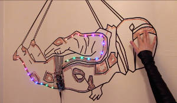
Outros artigos/projetos interessantes de ler:
- Dumping Old PROMs With New Hardware
- The power of Arduino, this unknown ...
- Arduino DCF77 Master Wall Clock
- Stenography (Yes, with Arduinos)
Compras ^
Artigos do ebay ou de outras lojas online que poderão ser úteis em projetos.
6 New B500k Split Shaft Guitar Potentiometer Pots Audio Tone Switch Control
(http://www.ebay.co.uk/itm/141157845435) - £1.02
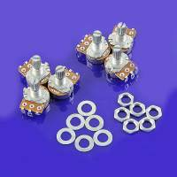
Description
- 100% Brand new and high quality
- Professional quality B500K Potentiometer, audio tone switch, for electric guitars
- This is a brand new part and comes with washer and nut
- Resistance: 500K ohm
- Base Dia: 16mm
- Shaft Length: 18mm
- Split Shaft: 6mm
- Weight: 42g
Package includes:
- B500K Switch x 6
10 pcs 9V PP3 9Volt battery snap on clip connector T Type Holder Lead Wire
(http://www.ebay.co.uk/itm/390845146632) - £1.00
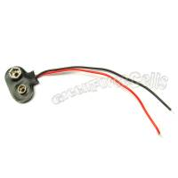
Description
- Snap-on 9V battery clip connector
- size : 12cm
Package includes:
- 10 pcs 9V clip connector T type
Ceramic Capacitor bag/25 kinds volumes/each 10/250pcs/Separate Loading Sales N
(http://www.ebay.co.uk/itm/261491101172) - £1.20
That's all Folks!